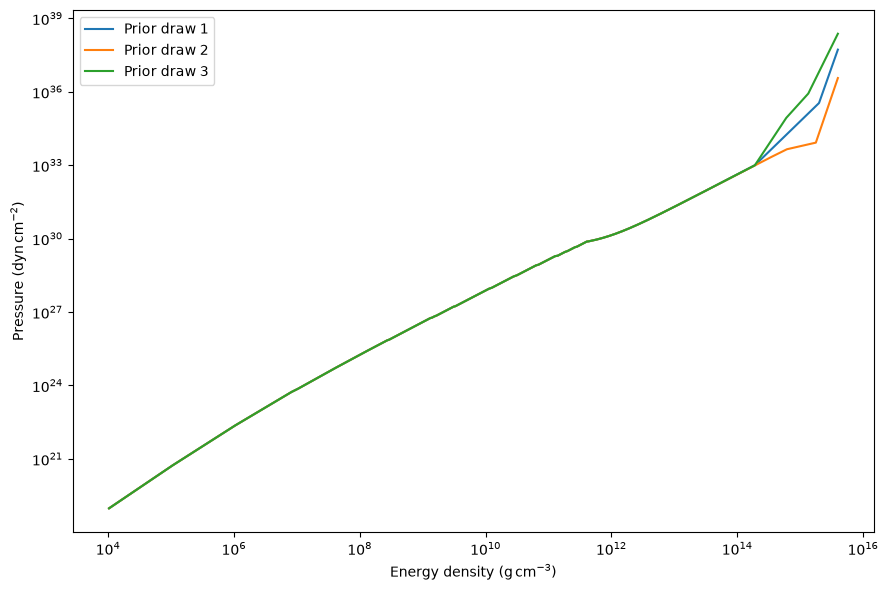

Polytrope EOS inference pipeline
This tutorial uses one simulated mass-radius measurement. The default unit check plots three EOS curves without solving stellar structure. A separate, small UltraNest run checks the sampler interface. Neither diagnostic is a converged inference; the full inference is explicitly enabled in the final cell.
Run this notebook after installing CompactObject-TOV[notebooks], or install the source checkout with python -m pip install -e ".[notebooks]".
[1]:
from functools import lru_cache
from pathlib import Path
from time import perf_counter
import sys
import matplotlib.pyplot as plt
import numpy as np
import ultranest
import ultranest.stepsampler
# Use the checkout when run from the repository root, Test_Case, or docs/source.
for candidate in (Path.cwd(), *Path.cwd().parents):
if (candidate / "pyproject.toml").is_file():
sys.path.insert(0, str(candidate))
break
import InferenceWorkflow
import InferenceWorkflow.prior as prior
import InferenceWorkflow.BayesianSampler as sampler
from InferenceWorkflow.Likelihood import gaussian_log_likelihood
import EOSgenerators.Polytrope_EOS as Polytrope
import TOVsolver.main as main
from TOVsolver.unit import g_cm_3, dyn_cm_2, km, Msun
Prepare the crust and EOS grid
The BPS crust table is loaded from the package data, so the working directory does not affect this step. The inner crust is joined to it using the same analytic relation as the original example. Densities supplied by the prior are in g/cm³; convert them to package units before combining them with the crust. Pressures are converted from dyn/cm². All inputs to Polytrope.compute_EOS and main.OutputMR below use package units.
[2]:
crust_file = Path(InferenceWorkflow.__file__).parent / "data" / "Tolos_crust_out.txt"
crust_table = np.loadtxt(crust_file, comments="#", usecols=(0, 1, 2, 3, 4))
inner_density_cgs = np.logspace(11.7, 14.28, 1000)
inner_pressure_cgs = 4.75764e29 + 9.04238e13 * inner_density_cgs**(4 / 3)
eps_crust = np.concatenate((crust_table[:, 3], inner_density_cgs)) * g_cm_3
pres_crust = np.concatenate((crust_table[:, 4], inner_pressure_cgs)) * dyn_cm_2
rho_crust_end = eps_crust[-1]
P_crust_end = pres_crust[-1]
rho_ns = 267994004080000.03 # g/cm³
core_density = np.logspace(14.28, 15.6, 1000)[1:] * g_cm_3
@lru_cache(maxsize=8)
def _eos_for_parameters(eos_parameters):
rho_t_1, rho_t_2, gamma_1, gamma_2, gamma_3 = eos_parameters
eos_theta = np.array([
gamma_1, gamma_2, gamma_3,
rho_t_1 * g_cm_3, rho_t_2 * g_cm_3,
])
core_pressure = Polytrope.compute_EOS(
core_density, eos_theta, rho_crust_end, P_crust_end,
)
energy_density = np.concatenate((eps_crust, core_density))
pressure = np.concatenate((pres_crust, core_pressure))
if (not np.all(np.isfinite(pressure))
or np.any(np.diff(energy_density) <= 0)
or np.any(np.diff(pressure) <= 0)):
raise ValueError("The EOS must have finite, increasing density and pressure")
return energy_density, pressure
def eos_from_parameters(theta):
# Share exactly the same EOS construction between all checks and inference.
return _eos_for_parameters(tuple(np.asarray(theta[:5], dtype=float)))
Set up the prior
The two transition densities are ordered and sampled in g/cm³. The three polytropic indices retain the ranges used in this example. The sixth parameter, d1, is log10 of the central density in g/cm³.
The central-density upper bound depends on the EOS. prior_transform therefore solves a mass-radius sequence and locates the first decrease in mass. It uses the actual grid passed to OutputMR, including when a sequence terminates early. This is a grid approximation to the end of the connected stable branch; check grid convergence before using it for a scientific inference.
Each full prior evaluation can require 50 TOV integrations. This is the expensive part of sampling, and is not needed to check the EOS units. The small sampler check below explicitly uses a coarser six-point grid; the full inference keeps the 50-point grid. An EOS without a usable stable interval receives the existing d1=0 rejection sentinel, which the likelihood rejects.
[3]:
parameters = ["rho_t_1", "rho_t_2", "gamma_1", "gamma_2", "gamma_3", "d1"]
gamma_low_limits = np.array([1.0, 0.0, 0.5])
gamma_up_limits = np.array([4.5, 8.0, 8.0])
CENTRAL_DENSITY_GRID_CGS = np.logspace(14.3, 15.6, 50)
REJECTED_LOG_LIKELIHOOD = -1e101
def eos_prior_transform(cube):
"""Map the five EOS parameters without any TOV calculation."""
cube = np.asarray(cube, dtype=float)
if cube.shape != (len(parameters),) or np.any(~np.isfinite(cube)) or np.any((cube < 0) | (cube > 1)):
raise ValueError("Expected six finite unit-cube coordinates in [0, 1]")
para = np.zeros(len(parameters))
para[0] = prior.flat_prior(1.5 * rho_ns, 8.3 * rho_ns, cube[0])
para[1] = prior.flat_prior(para[0], 8.3 * rho_ns, cube[1])
para[2:5] = gamma_low_limits + (gamma_up_limits - gamma_low_limits) * cube[2:5]
return para
def prior_transform(cube, central_density_grid_cgs=CENTRAL_DENSITY_GRID_CGS):
para = eos_prior_transform(cube)
grid_cgs = np.asarray(central_density_grid_cgs, dtype=float)
if grid_cgs.ndim != 1 or len(grid_cgs) < 2 or np.any(~np.isfinite(grid_cgs)) or np.any(grid_cgs <= 0) or np.any(np.diff(grid_cgs) <= 0):
raise ValueError("The central-density grid must be positive and increasing")
try:
energy_density, pressure = eos_from_parameters(para)
mr = main.OutputMR(
"", energy_density, pressure,
central_density_range=grid_cgs * g_cm_3,
)
except (ValueError, OverflowError, FloatingPointError):
return para
if len(mr) < 2 or not np.all(np.isfinite(mr)) or np.any(mr <= 0):
return para
falling = np.flatnonzero(np.diff(mr[:, 0]) < 0)
peak_index = int(falling[0]) if len(falling) else len(mr) - 1
if peak_index == 0:
return para
log_density_min = np.log10(grid_cgs[0])
log_density_max = np.log10(grid_cgs[peak_index])
para[5] = prior.flat_prior(log_density_min, log_density_max, cube[5])
return para
Set up the likelihood
This example uses one simulated observation: mass 1.97 solar masses and radius 10 km, with independent Gaussian uncertainties of 0.0985 solar masses and 0.5 km. For each proposed central density, solve one star and evaluate the Gaussian directly in log space to avoid numerical underflow.
[4]:
observed_mr = np.array([1.97, 10.0])
observed_sigma = np.array([0.0985, 0.5])
def likelihood_transform(theta):
if theta[5] == 0:
return REJECTED_LOG_LIKELIHOOD
try:
energy_density, pressure = eos_from_parameters(theta)
mr = main.OutputMR(
"", energy_density, pressure,
central_density_range=np.array([10.0**theta[5]]) * g_cm_3,
)
except (ValueError, OverflowError, FloatingPointError):
return REJECTED_LOG_LIKELIHOOD
if mr.shape != (1, 2) or not np.all(np.isfinite(mr)) or np.any(mr <= 0):
return REJECTED_LOG_LIKELIHOOD
return gaussian_log_likelihood(mr[0] / np.array([Msun, km]), observed_mr, observed_sigma)
Check the prior units without solving stars
The original unit-check cell generated 20 complete mass-radius sequences (about 1,000 TOV integrations) before displaying a figure. It was an expensive prior-predictive calculation, rather than a quick unit check.
The default check now uses three reproducible prior draws and plots pressure against energy density. It makes no TOV calls and is not a prerequisite for the sampler. The optional mass-radius survey is disabled by default. Set RUN_MASS_RADIUS_CHECK=True to request it; it prints progress before each curve, uses an explicit 12-point density grid, and can still take appreciable time. Change N_MR_CURVES or the grid only for this diagnostic.
[5]:
N_EOS_CURVES = 3
RUN_MASS_RADIUS_CHECK = False
N_MR_CURVES = 2
MR_PLOT_DENSITY_GRID_CGS = np.logspace(14.3, 15.6, 12)
rng = np.random.default_rng(146)
diagnostic_parameters = []
started = perf_counter()
fig, ax = plt.subplots(figsize=(9, 6))
for index in range(N_EOS_CURVES):
theta = eos_prior_transform(rng.random(len(parameters)))
energy_density, pressure = eos_from_parameters(theta)
diagnostic_parameters.append(theta)
ax.loglog(energy_density / g_cm_3, pressure / dyn_cm_2, label=f"Prior draw {index + 1}")
print(f"EOS check {index + 1}/{N_EOS_CURVES}: {perf_counter() - started:.2f} s elapsed", flush=True)
ax.set_xlabel(r"Energy density ($\mathrm{g\,cm^{-3}}$)")
ax.set_ylabel(r"Pressure ($\mathrm{dyn\,cm^{-2}}$)")
ax.legend()
fig.tight_layout()
plt.show()
if RUN_MASS_RADIUS_CHECK:
fig, ax = plt.subplots(figsize=(9, 6))
n_curves = min(N_MR_CURVES, len(diagnostic_parameters))
for index, theta in enumerate(diagnostic_parameters[:n_curves]):
print(f"Starting optional M-R curve {index + 1}/{n_curves} ...", flush=True)
curve_started = perf_counter()
energy_density, pressure = eos_from_parameters(theta)
mr = main.OutputMR("", energy_density, pressure,
central_density_range=MR_PLOT_DENSITY_GRID_CGS * g_cm_3)
ax.plot(mr[:, 1] / km, mr[:, 0] / Msun, label=f"Prior draw {index + 1}")
print(f"Finished curve {index + 1}/{n_curves} in {perf_counter() - curve_started:.2f} s", flush=True)
ax.set_xlabel("Radius [km]")
ax.set_ylabel(r"Mass [$M_{\odot}$]")
ax.legend()
fig.tight_layout()
plt.show()
else:
print("Optional M-R survey skipped. Continue with the sampler check below.", flush=True)
EOS check 1/3: 0.01 s elapsed
EOS check 2/3: 0.02 s elapsed
EOS check 3/3: 0.02 s elapsed

Optional M-R survey skipped. Continue with the sampler check below.
Small sampler check
This runs the real EOS, prior, likelihood, and UltraNest interfaces with eight live points, a six-point central-density grid over log10 density 14.6–15.6, and a small call/iteration budget. This restricted density interval is used only for the interface check; it changes the demonstration prior. The full inference retains the log10 density interval 14.3–15.6. Progress is printed before and after each prior evaluation, including the initial UltraNest checks. The call budget is a sampler stopping condition, not a wall-clock timeout; individual stellar integrations can still be slow.
This check demonstrates that the pipeline runs. Its coarse grid and tiny sample are not suitable for posterior or evidence estimates. The full inference below uses the original 50-point grid and larger budget.
[6]:
SMOKE_DENSITY_GRID_CGS = np.logspace(14.6, 15.6, 6)
smoke_prior_calls = 0
def smoke_prior_transform(cube):
global smoke_prior_calls
smoke_prior_calls += 1
started = perf_counter()
print(f"Sampler check: starting prior evaluation {smoke_prior_calls} ...", flush=True)
theta = prior_transform(cube, central_density_grid_cgs=SMOKE_DENSITY_GRID_CGS)
print(f"Sampler check: prior evaluation {smoke_prior_calls} finished in {perf_counter() - started:.2f} s", flush=True)
return theta
np.random.seed(146)
smoke_started = perf_counter()
smoke_sampler = ultranest.ReactiveNestedSampler(
parameters, likelihood_transform, smoke_prior_transform,
num_test_samples=1, ndraw_min=8, ndraw_max=8, num_bootstraps=5,
)
smoke_result = smoke_sampler.run(
min_num_live_points=8, cluster_num_live_points=8,
max_ncalls=16, max_iters=1, max_num_improvement_loops=0,
min_ess=1, dlogz=100, show_status=True, viz_callback=False,
)
print(f"Sampler interface check completed in {perf_counter() - smoke_started:.2f} s; {smoke_result['ncall']} likelihood calls.")
print("This small run is not a converged scientific inference.")
Sampler check: starting prior evaluation 1 ...
/opt/hostedtoolcache/Python/3.11.17/x64/lib/python3.11/site-packages/scipy/integrate/_ode.py:418: UserWarning: dopri5: step size becomes too small
self._y, self.t = mth(self.f, self.jac or (lambda: None),
Sampler check: prior evaluation 1 finished in 6.86 s
Sampler check: starting prior evaluation 2 ...
Sampler check: prior evaluation 2 finished in 133.06 s
Sampler check: starting prior evaluation 3 ...
Sampler check: prior evaluation 3 finished in 1.95 s
[ultranest] Sampling 8 live points from prior ...
Sampler check: starting prior evaluation 4 ...
Sampler check: prior evaluation 4 finished in 1.96 s
Sampler check: starting prior evaluation 5 ...
Sampler check: prior evaluation 5 finished in 2.19 s
Sampler check: starting prior evaluation 6 ...
Sampler check: prior evaluation 6 finished in 2.26 s
Sampler check: starting prior evaluation 7 ...
Sampler check: prior evaluation 7 finished in 2.10 s
Sampler check: starting prior evaluation 8 ...
Sampler check: prior evaluation 8 finished in 2.64 s
Sampler check: starting prior evaluation 9 ...
Sampler check: prior evaluation 9 finished in 28.80 s
Sampler check: starting prior evaluation 10 ...
Sampler check: prior evaluation 10 finished in 2.18 s
Sampler check: starting prior evaluation 11 ...
Sampler check: prior evaluation 11 finished in 6.20 s
Sampler check: starting prior evaluation 12 ...
/opt/hostedtoolcache/Python/3.11.17/x64/lib/python3.11/site-packages/scipy/integrate/_ode.py:418: UserWarning: dopri5: step size becomes too small
self._y, self.t = mth(self.f, self.jac or (lambda: None),
Sampler check: prior evaluation 12 finished in 2.04 s
[ultranest] Explored until L=-8
[ultranest] Likelihood function evaluations: 9
[ultranest] Reached maximum number of improvement loops.
[ultranest] done iterating.
Sampler interface check completed in 195.34 s; 9 likelihood calls.
This small run is not a converged scientific inference.
Full inference (optional, long running)
Set RUN_FULL_INFERENCE=True when ready for the full calculation. It uses the 50-point central-density prior grid, 400 live points and a budget of 60,000 likelihood calls. Each prior evaluation also integrates a stellar sequence, so this can take many hours or longer depending on the machine and EOS draws. The small checks above do not need this cell to be enabled.
A call limit does not establish convergence. Increase the budget as needed and inspect UltraNest’s convergence diagnostics, effective sample size and stability with respect to the EOS/central-density grids before reporting results.
[7]:
RUN_FULL_INFERENCE = False
if RUN_FULL_INFERENCE:
step = 2 * len(parameters)
live_point = 400
max_calls = 60000
samples = sampler.UltranestSampler(
parameters, likelihood_transform, prior_transform,
step, live_point, max_calls,
)
else:
print("Full inference skipped. Set RUN_FULL_INFERENCE=True to enable it.")
Full inference skipped. Set RUN_FULL_INFERENCE=True to enable it.